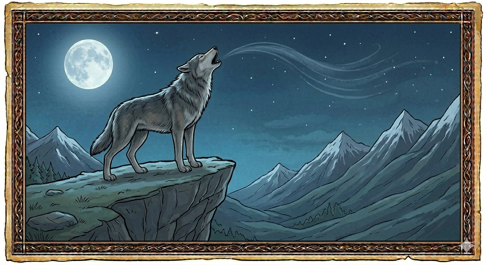

И.А. Дахкильгов. Хьехаме дувцарш - поучительные рассказы-притчи.
И.А. Дахкильгов. Хьехаме дувцарш - поучительные рассказы-притчи. Из ингушского фольклора.

Сай мотт хьона 1омабергбац аз
Гаьннарча замах в1ашаг1акхийта хиннай борзи ж1алеи. Цецъяьннача берзо хаьттад: - Хьо фу аькха да? Сона тара ма дий хьо! - Со ж1али да. Хьо мала да? - Бордз я. - Вошал тасс вай, - ж1але аьлча, бордз раьза хиннай. В1аший мотт 1омабе лаьрх1ад цар. Берзо аьннад: - Ж1али, хьалхаг1а хьа мотт 1омабергба. Д1аболабе из. - 1ав, 1ав, 1ав, - аьнна, 1аьхад ж1али. - Фу яхалга да из? – хаьттад берзо. - Из яхалга, даьсара, да: хоастам бу аз, хоастам бу аз, хоастам бу аз. - Хьанна, фу бахьан долаш бу 1а хоастам? - Сага хоастам бу аз, цо се кхабарах. - Х1ана кхоаб хьо цо аьлча? - Со цунна чуэтта хиларах. - Иштта из долче, хьа 1адика хийла, - аьннад берзо. - Са мотт 1омабе безам бац хьа? – цецдаьннад ж1али. - Лаьша бувцаш бола мотт аз 1омабергбац, - хаддаш аьннад берзо. - Х1аьта миштаб хьа мотт? Аз 1омабе магаций из? – хаьттад. - Ж1али, са мотт хьога 1омалургбац! – аьнна, бордз лоамашкахьа д1а а йийрза, 1аьхай. Цун турпала оаз лоамашка г1олла чакхъяьнна лувкхераг1а юхаенай. Чура са д1а х1ана додац, аьнна, дерригача дег1ах оагаденнад ж1али. Хайнад цунна берза турпала мотт шийга 1омалургбоацалга.
РУССКИЙ
Не буду учить своему языку
В отдаленные времена встретились впервые волк и собака. Волк удивленно спросил: - Ты что за зверь? Уж очень на меня похож. - Я собака. А ты кто? - Волк. - Давай брататься, - предложила собака. - Волк согласился. Они решили обучить друг друга своему языку. - Начинай учить, - сказал волк собаке. - Гав, гав, гав, - залаяла собака. - Как это переводится? - Это переводится: славлю тебя, славлю тебя, славлю тебя! - Кого же ты славишь и за что? - Человека славлю за то, что он кормит меня. - А за что он тебя кормит? - За то, что я прислуживаю ему. - Тогда прощай, - сказал волк. - Ты не хочешь обучаться моему языку? – удивилась собака. - Я не хочу изучать рабский язык, - отрезал волк. - Ну а каков же твой язык, может, я смогу его выучить? - Нет, ты не сможешь обучиться моему языку! Волк повернул голову к горам и издал протяжный богатырский вой. Горы звучным эхом ответили на него. Собака задрожала всем телом, поняв, что ей не обучиться богатырскому языку волка.
ENGLISH
НОХЧИЙН
ПОГОВОРКИ